Presentación, componentes e inventario
Manual de usuario - Kit SmartHome
Manual de usuario

Área: I2D
Producto: AR4623 - Kit SmartHome
Versión: 1.1.0
Fecha: 16/02/2026
Autores: Juan Luis Ballesteros, José Carlos Serrato
Tiempo estimado de lectura: 12 minutos
Tiempo estimado de ensamble: 4 horas
Tiempo estimado de puesta en funcionamiento: 1 hora
Control de versiones
| Versión | Fecha | Nombre | Cambios realizados |
|---|---|---|---|
| V1.1.0 | 16/02/2026 | José Serrato | Cambio de motor, mejora de ensamble (electrónica y espacio asignado) y plantillas de corte mejoradas. |
| V1.0.1 | — | José Serrato | Corrección de puentes en corte láser. |
| V1.0.0 | — | José Serrato | Creación del proyecto, primer borrador. |
Introducción
El Kit SmartHome de UNIT Electronics es una plataforma didáctica
diseñada para el aprendizaje
práctica de electrónica y programación mediante la construcción de una
casa inteligente
funcional.
El usuario ensamblará piezas mecánicas, integrará electrónica
modular, hará uso del control
PWM, el protocolo de comunicación I2C y realizará lectura de sensores
tanto digitales como
analógicos, todo con apoyo de una aplicación móvil.
El kit integra múltiples sensores y actuadores, controlados por la
tarjeta de desarrollo UNIT
DualMCU ONE, que incorpora los microcontroladores:
ESP32
RP2040
La UNIT DualMCU ONE permite trabajar con:
Arduino IDE
MicroPython
CircuitPython
Raspberry Pi C/C++ SDK
Materiales:
MDF
Acrílico
PLA (Impresiones 3D)
Fuente de alimentación:
Eliminador 12V 2A mediante Jack.
Sensores:
Sensor de flama KY-026
Sensor de lluvia FC-37
Sensor de temperatura y humedad AHT10
Sensor fotorresistor KY-018
Neopixel
RFID RC522 (con tarjeta y llavero)
IR HX1838
Botón capacitivo TTP223B
Encoder KY-040
Sensor de movimiento PIR HC-SR505
Actuadores:
Servomotor SG90
Buzzer pasivo KY-006
Display Oled 0.96” SSD1306
Motor DC (con hélice)
Módulos y electrónica:
Tarjeta de desarrollo UNIT DualMCU ONE ESP32 + RP2040
Hub I2C QW/ST
Puente H MX1508
PCA9685
Sensor Shield V5
Eliminador 12V 2A Jack
Cables:
Qwiic a Qwiic
Qwiic a Dupont (M-H)
Dupont - Dupont (H-H)
Dupont - Dupont (H-M)
Dupont - Dupont (H-H Fijo 2 vías)
Dupont - Dupont (H-H Fijo 3 vías)
Tornillería:
M2x8
M2.5x8
M3x6
M3x8
M3x10
Separador de latón
Tuercas M2
Tuercas M2.5
Tuercas M3
Herramientas recomendadas para el ensamble:
Desarmador plano
Desarmador de cruz
Pinzas de punta delgada o pinzas SMD (te serán útil al momento de
cablear)
Cautín
Herramientas no incluidas
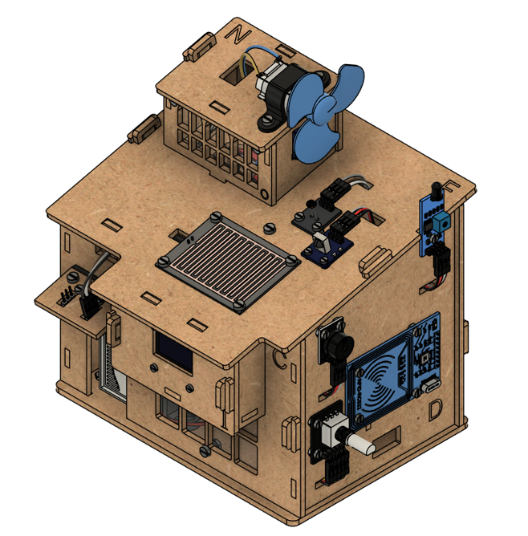
Lista de materiales
| Folio | Descripción | Imagen | Cantidad |
|---|---|---|---|
| KSH01 | M2x8 queso ranurada |  |
12 |
| KSH02 | M2.5x8 queso ranurada | 23 | |
| KSH03 | M3x6 queso ranurada |  |
6 |
| KSH04 | M3x8 queso ranurada |  |
18 |
| KSH05 | M3x10 queso ranurada |  |
5 |
| KSH06 | M3x5+6 separador latón | 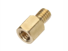 |
4 |
| Folio | Descripción | Imagen | Cantidad |
|---|---|---|---|
| KSH07 | M2 tuerca |  |
16 |
| KSH08 | M2.5 tuerca | 41 | |
| KSH09 | M3 tuerca |  |
33 |
| KSH10 | UNIT DualMCU ONE | 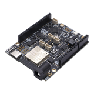 |
1 |
| KSH11 | SG90 Servomotor | 1 | |
| KSH12 | KY-006 Buzzer | 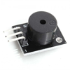 |
1 |
| KSH13 | KY-026 Sensor de flama | 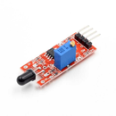 |
1 |
| KSH14 | FC-37 Sensor de lluvia | 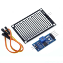 |
1 |
| KSH15 | AHT10 Sensor de temperatura y humedad | 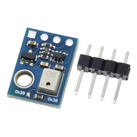 |
1 |
| Folio | Descripción | Imagen | Cantidad |
|---|---|---|---|
| KSH16 | SSD1315 Pantalla OLED | 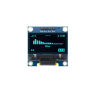 |
1 |
| KSH17 | KY-018 Fotorresistor | 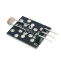 |
1 |
| KSH18 | WS2812 Neopixel | 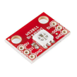 |
3 |
| KSH19 | RC522 Sensor RFID | 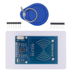 |
1 |
| KSH20 | HX1838 Sensor IR | 1 | |
| KSH21 | TTP223B Botón Capacitivo | 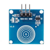 |
1 |
| KSH22 | KY-040 Encoder | 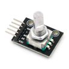 |
1 |
| KSH23 | UNIT Módulo Hub I2C QW/ST | 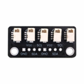 |
1 |
| KSH24 | HC-SR505 PIR | 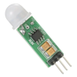 |
1 |
| KSH25 | Motor DC con Hélice | 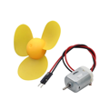 |
1 |
| Folio | Descripción | Imagen | Cantidad |
|---|---|---|---|
| KSH26 | MX1508 Puente H | 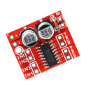 |
1 |
| KSH27 | PCA9685 | 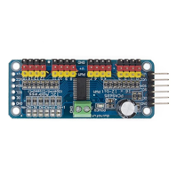 |
1 |
| KSH28 | Sensor Shield V5.0 UNO R3 | 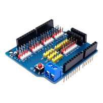 |
1 |
| KSH29 | Eliminador 12V 2A Jack | 1 | |
| KSH30 | Cable Qwiic - Qwiic 10 cm | 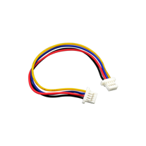 |
1 |
| KSH31 | Cable Qwiic - Dupont Hembra 20 cm |  |
3 |
| KSH32 | Cable Dupont H-H 20 cm | 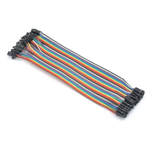 |
16 |
| Folio | Descripción | Imagen | Cantidad |
|---|---|---|---|
| KSH33 | Cable Dupont M-H 20 cm | 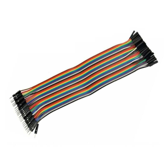 |
2 |
| KSH34 | Cable Dupont H-H Fijo 2 vías | 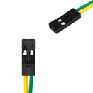 |
3 |
| KSH35 | Cable Dupont H-H Fijo 3 vías | 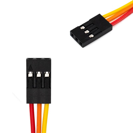 |
8 |
| KSH36 | Tira Header Macho 40 pines | 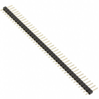 |
1 |
| KSH37 | Pila de Botón 3V | 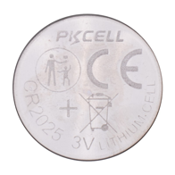 |
1 |
| KSH38 | Juego de impresiones | 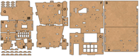 |
1 juego |
| KSH39 | Juego de cortes en MDF | 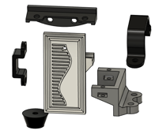 |
1 juego |
1.- Ensamble
Objetivo:
Ensamble
Guiar al usuario en el ensamble de los componentes del Kit SmartHome,
asegurando la correcta
instalación de la estructura como de la electrónica, así como conexiones
de cables a los
módulos.
Resultado esperado:
Estructura de la casa ensamblada con la electrónica atornillada y
cableado preparado para su
conexión con la shield.
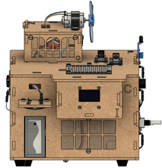
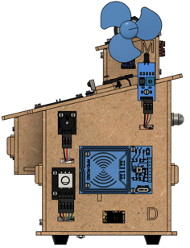
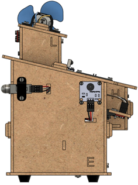
Vista frontal
Vista lateral Derecha
Vista lateral Izquierda
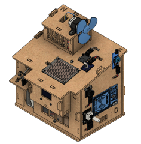
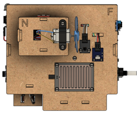
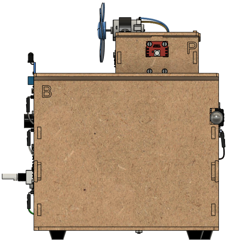
Vista superior
Vista Isométrica
Vista posterior
Resultado final esperado terminada la sección Ensamble.
Desarrollo:
Recomendaciones:
Ubica todas las piezas del apartado previo al ensamble
Reúne las herramientas mencionadas en la introducción
Retira los cortes de MDF de su marco conforme se utilicen, con la
intención de tener un
ensamble más organizado
Coloca la pila de botón CR2025 al control infrarrojo
Suelda los pines de los módulos previo a su ensamble
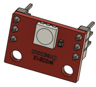
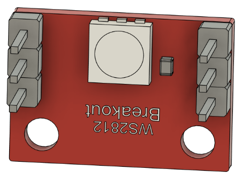
Pines en cara superior (1
módulo)
Pines en cara posterior (2
módulos)
Pines módulos Neopixel
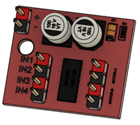
Pines soldados Puente H
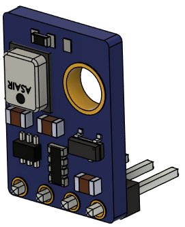
Pines soldados AHT10
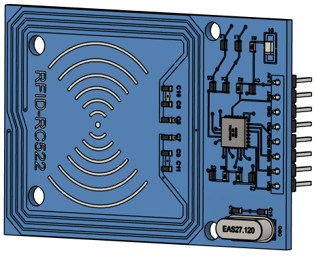
Pines soldados RC522
Procedimiento de ensamble:
Ubicación de componentes de la sección
Ensamble de módulos
Cableado del módulo
Precaución: Una mala conexión puede provocar daño en los módulos
1.0 - Preparación
Para evitar problemas de ensamble, se requiere energizar el
servomotor para dejar la posición
inicial correcta. Sigue el siguiente diagrama y realiza las conexiones
necesarias.
Nota: Es necesario montar la shield a la DualONE. En el diagrama se
muestran separadas
para un mejor entendimiento.
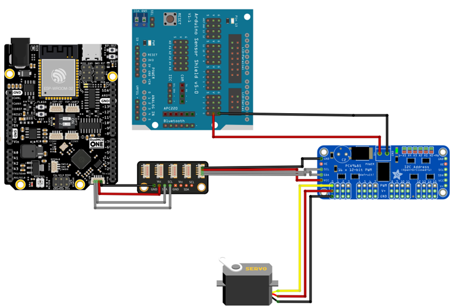
Conexi
1.1 - Base (A)
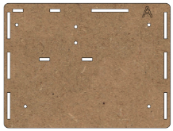
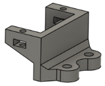
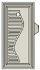
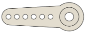
Brazo Servomotor
Regatones (4
pzs)
MDF - A
Base Servomotor
Puerta
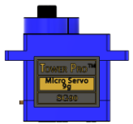
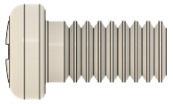
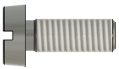
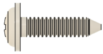
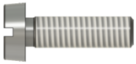
M3x10 (2 pzs)
Pija M2.8
M3x8 (4 pzs)
Tornillo
Servomotor
Servomotor
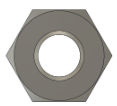
M2x8 (2 pzs)
M3 (6 pzs)
M2 (2pzs)
MDF-A + 4x tornillos M3x8 + 4x tuercas M3 +
4x regatones
Repite el paso en las 4 esquinas.
Puerta + Base servomotor + 2x tornillos M2x8 + 2x tuercas M2 +
tornillo y pija servomotor (estos últimos se ubican junto con el
servomotor)
2x tornillos M3x10 + 2x tuercas M3
Ensamble 1.1
1.2 - Pared (C) + Techo (J)
Impresión
anclaje J
M3x8 (4 pzs)
MDF - J
MDF - C
Acrílico inferior
Dupont fijo 3
vías
M2.5x8 (2 pzs)
M3x6 (2 pzs)
M3 (6 pzs)
M2.5 (2
pzs)

Neopixel
Precaución: Cuida la polaridad de los Neopixel, una mala conexión
puede quemar los
Neopixel.
MDF-C + Acrílico Inferior + 2x tornillos M3x8 + 2x
tuercas M3
Impresión anclaje J + 2x tornillos M3x8 + 2x tuercas
M3
MDF-J + Neopixel + 2x tornillos M2.5 +
2x tuercas M2.5
2x tornillos M3x6 + 2x tuercas M3

+ Dupont fijo 3 vías
Ensamble 1.2
Conecta los cables por los espacios designados para agilizar el proceso
1.3 - Paredes (H) + Pared (I) + Base (G) + Ensamble 1.2
MDF - Llave (4
pzs)
MDF - G
MDF - I
MDF - H
(2 pzs)
Ensamble 1.2
M2x8 (4 pzs)
M2 (4 pzs)
Cable Qwiic a
Dupont
Pantalla OLED
2x MDF-H + MDF-G
+ MDF-I
Pantalla OLED + 4x tornillos M2x8 + 4x tuercas M2
+ Cable Qwiic a dupont
+ 4x MDF-Llave

Ensamble 1.3
1.4 - Pared (D)
Lector RFID
Encoder
Buzzer
MDF - D
Sensor
de
flama
Dupont fijo 2
vías
Dupont fijo 3
vías
M2.5x8 (9 pzs)
Dupont H-H (7
pzs)
M2.5 (18
pzs)
9 tornillos M2.5x8 + 18 tuercas M2.5 + Encoder + Lector RFID +
Buzzer + Sensor de flama
Orden de ensamble. Tornillo, módulo, tuerca (funciona como separador
y mantiene en su
lugar al módulo), MDF y tuerca.
Imagen lateral MDF-D con módulos ensamblados

Coloca los cables correspondientes a los módulos + 3x Dupont fijo
3
vías + Dupont fijo 2 vías + 7x cables dupont H-H
Encoder: Dupont fijo 3 vías + Dupont fijo 2 vías
Buzzer: Dupont fijo 3 vías
Flama: Dupont fijo 3 vías
RFID: 7 cables dupont H-H
Ensamble MDF - D con módulos y cables, organizados.
Ensamble 1.4
1.5 - Pared (D)
M3x8 (2 pzs)
PIR
MDF - E
Botón
Capacitivo
Soporte
PIR
Dupont fijo 3
vías
M2x8 (4 pzs)
M3 (2 pzs)
Dupont H-H (3
pzs)
M2 (8 pzs)
MDF-E
2x tornillos M3x8 + 2x tuercas M3 + Soporte PIR + PIR
4x tornillos M2x8 + 8x tuercas M2 + Botón capacitivo
Recuerda el orden correcto. Tornillo, módulo, tuerca, MDF, tuerca.
3x Dupont H-H + Dupont fijo 3 vías
Ensamble 1.5
PIR: 3x Dupont H-H
Botón Capacitivo: Dupont Fijo 3 vías
1.6 - Techo (F)
Sensor de
lluvia (2)
Sensor de
lluvia (1)
Fotorres
istor
Puente H
MDF - F
M3x10
M3x8 (4 pzs)
M2.5x8 (3 pzs)
M3 (6 pzs)
Sensor IR

Dupont fijo 3
vías (2 pzs)
M2x8 (2 pzs)
Dupont H-H (5
pzs)
M2.5 (6 pzs)
M2 (4 pzs)
2 de los 5 cables Dupont H-H vienen embolsados con el sensor de lluvia.
MDF-F
Sensor de lluvia (1) + 4x tornillos M3x8 + 4x tuerca M3
Sensor IR + 2x tornillos M2x8 + 4x tuercas M2
Fotorresistor + 2x tornillos M2.5x8 + 4x tuercas M2.5
Sensor de lluvia (2) + tornillo M3x10 + 2x tuercas M3
Puente H + tornillo M2.5x8 + 2x tuercas M2.5
+ 2x Dupont H-H
Conecta las dos partes del sensor de lluvia
+ Cable Dupont H-H
2x Cables dupont fijo de 3 vías (Conectar Sensor IR y Fotorresitor)
Ensamble 1.6

Ensamble 1.6
1.7 - Pared (Q)
PCA9685
Hub I2C
QW/ST
Pared Q
DualONE
Sensor shield
M3x10 (2 pzs)
Separador de
latón (4 pzs)
M3x6 (4 pzs)
M2.5x8 (4 pzs)
M3 (8 pzs)
Cable Qwiic -
Qwiic
Cable Dupont
M-H (2 pzs)
Cable Qwicc -
Dupont
M2.5 (8 pzs)
MDF-Q
Dual ONE + 4x Separadores de latón + 3x tornillos M3x6 + 4x
tuercas M3
Hub I2C QW/ST + 2x tornillos M3x10 + 4x tuercas M3
PCA9685 + 4x tornillos M2.5x8 + 8x tuercas M2.5
+ Cable Qwiic - Qwiic
Precaución: Conecta el cable Qwiic - Qwiic de la tarjeta de
desarrollo DualONE al Hub I2C
previo a colocar el Sensor shield.
+ Sensor shield
Ensamble 1.7
1.8 - Ensamble piso inferior


Ensamble 1.1
Ensamble 1.7
Ensamble 1.3
Ensamble 1.6
Ensamble 1.5
Ensamble 1.4
Haremos uso de las secciones previamente ensambladas
Ensamble 1.7
Ensamble 1.7 + Ensamble 4
+ Ensamble 1.5
+ Ensamble 1.3
+ Ensamble 1.1
Este paso requiere de fuerza en el ensamble, debido a que el Ensamble 1.1 entra a presión

+ Ensamble 1.6
Resultado: Ensamble 1.8
De ser necesario, al realizar las conexiones, podrás retirar el Ensamble 1.6
1.9 - Ensamble piso superior
MDF - O
MDF - P
MDF - N
MDF - L
MDF - M
Soporte Motor
DC
Acrílico
Superior
Motor DC
Neopixel
Hélice
M3x8 (4 pzs)
M2.5x8 (5 pzs)
M3 (4 pzs)
M2.5 (7 pzs)
Sensor
Temperatur
a y
Humedad
Dupont fijo 2
vías
Dupont fijo 3
vías
Dupont H-H (3)
Cable Qwiic -
Qwiic
Modelo de la Hélice puede cambiar.
MDF-O + Acrílico Superior + 2x tornillos M3x8 + 2x tuercas M3
MDF-M + Sensor Temperatura y Humedad + tornillo
M2.5x8 + tuerca M2.5
+ Cable Qwiic-Dupont
MDF-P + 2x Neopixel + 4x tornillos M2.5 + 6x tuercas M2.5
Precaución: El Neopixel que apunta al exterior (donde está marcada la
letra P) requiere 4
tuercas. Se recomienda ajustar los tornillos con cautela, en especial la
tornillería del
Neopixel interior (el que se encuentra apuntando en sentido contrario a
la cara con la letra
P) para evitar que el Neopixel se encuentre torcido.
Ensamble P
+ Cable dupont fijo 3 vías
+ Cable dupont H-H
MDF-N + 2x tornillos M3x8 + 2x tuercas M3 + Motor DC + Hélice +
Soporte Motor DC
Referencia montaje motor
Precaución: Verifique la correcta instalación de la pared N, la cara
con la letra N es la cara
donde se coloca el motor. Asegúrate de colocar las conexiones del motor
DC de tal forma
que no se dañen con el MDF.
Ensamble N
Ensamble paredes piso superior
Paredes ensambladas
Ensamble techo piso superior
Ensamble 1.9
2.- Conexiones + Ensamble Final
Objetivo:
Realizar la integración electrónica completa del kit, conectando los
módulos previamente
ensamblados a la Shield, Hub I2C, PCA9685, Puente H y UNIT DualMCU ONE,
considerando
conexiones de comunicación, alimentación, así como su polaridad.
Resultado esperado:
Conexiones y ensamble final
Al finalizar esta sección el usuario deberá tener los sensores
conectados al Shield, actuadores
conectados a PCA9685 y Puente H según corresponda, Bus I2C correctamente
enlazado,
alimentación sin cortocircuitos.
Ilustración del ensamble al terminar las conexiones
2.1 - Conexiones paso a paso
Encoder - Shield
Precaución: Una mala conexión puede provocar daños en los módulos.
Buzzer - Shield
RFID - Shield
Sensor de llama - Shield
PIR - Shield
Botón capacitivo - Shield
Servomotor - PCA9685
PCA9685 - Shield - Hub I2C
Pantalla OLED - Hub I2C
Pantalla OLED - Hub I2C
El Hub I2C no tiene una posición designada, puedes conectar los
cables en cualquiera de
las posiciones.
Ensamble 1.8
Coloca el Ensamble 1.6 para continuar.
Ensamble 1.8 + 4x MDF-Llaves
Sensor de lluvia - Shield
Infrarrojo - Shield
Fotorresistor - Shield
Sensor Temperatura y Humedad - Hub I2C
Sensor Temperatura y Humedad - Hub I2C
Sensor Temperatura y Humedad - Hub I2C
Ensamble 1.9
Coloca el Ensamble 1.9 para continuar
Neopixel (dentro del piso superior) - Neopixel (sobre la puerta)
Neopixel (fuera del piso superior) - Shield
Motor DC - Puente H
(Puente H - PCA9685) + 2x cable dupont fijo 2 vías
2.2 - Ensamble Final
+ 4x MDF - Llaves
+ MDF-B
+ 2x MDF-Llaves
Ensamble Final
2.3 - Diagramas
2.3.1 - Diagramas Shield Resumido
Diagrama Shield simplificado (1)
Diagrama Shield simplificado (2)
Diagrama de las conexiones simplificadas de los sensores y actuadores
conectados
directamente a la Shield; este diagrama muestra la fila de pines a la
que se debe conectar cada
sensor y actuador considerando alimentación y comunicación.
Precaución: Previo a energizar, corrobore la correcta conexión de los
componentes
electrónicos.
2.3.2 - Diagrama DualONE, Hub I2C, PCA9685
Diagrama DualONE, Hub I2C y PCA9685
2.3.3 - Diagrama completo
Diagrama completo (1)
Diagrama completo (2)
Puesta en marcha
Este diagrama muestra todas las conexiones a realizar.
3.- Puesta en marcha
Objetivo:
Activación funcional del Kit SmartHome mediante la instalación de la
aplicación móvil oficial,
emparejamiento con la aplicación, correcta respuesta del kit. Esta
sección convierten el
ensamble físico en un sistema inteligente operativo.
Instalacion:
Una vez descargado el archivo apk seleccionar el archivo, se mostrara el siguiente mensaje
Al seleccionar Instalar se iniciara el proceso de instalacion en el dispositivo
Al no ser una aplicacion nativa de Play Store se mostrara un mensaje
de proteccion, se tendra
que seleccionar “Instalar de todas formas“
Tras la instalación se podra encontrar el icono como una aplicacion mas en el sistema
Resultado esperado:
Aplicación funcional con visualización de la información recibida por
los sensores y control de
los actuadores. Ejecución de eventos.
Actualmente la aplicación solo está disponible para Android,
descargando el.apk desde
nuestras fuentes oficiales.
Aplicación: Sensores
Aplicación: Control actuadores
Vista de la aplicación
3.1 - Carga de firmware
El firmware viene previamente programado en la UNIT DualONE
De ser necesaria la instalación del firmware sigue estos pasos.
3.1.1 - ESP32
Debes tener Arduino IDE instalado en tu computadora.
- Descarga el archivo arduino-littlefs-upload-X.X.X.vsix del último release del repositorio de
GitHub.
Última versión del archivo en Febrero de 2026
- Dirígete al directorio de arduino de tu computadora: C:\Users\<username>\.arduinoIDE\.
Directorio Arduino
- Abre la carpeta plugins y pega el archivo descargado.
De no existir la carpeta, debes crear la carpeta plugins.
Carpeta plugins
- Reinicia y abre el Arduino IDE. Utiliza el atajo [Ctrl] + [Shift] + [P] y verifica que exista la
instrucción Upload Little FS to Pico/ESP8266/ESP32
Verificación de la correcta instalación del plugin
- Descarga el repositorio del proyecto en GitHub. En la ubicación:
\software\ESP32\Smart_Home_App_ESP_COMV4 esta ubicado el programa.ino
que se
deberá cargar a la ESP32. Abre el archivo Smart_Home_App_ESP_COMV4
Directorio programa ESP32
- Sube la información a la ESP32 desde el IDE de Arduino conecta la DualONE con el monitor
serial cerrado y el programa a cargar abierto, se presiona [Ctrl] +
[Shift] + [P] y se selecciona
’Upload Little FS to Pico/ESP8266/ESP32‘. Aparecerá la siguiente
ventana.
Ventana: KittleFS Upload
Nota: Una vez aparezca el mensaje “Connecting………” puede ser necesario
presionar el
botón de boot de la DualONE si la carga no se hace en automático.
- Espera a que se muestre el mensaje que confirme la correcta descarga de información.
Mensaje de confirmación
- Carga el archivo.ino a la ESP32.
Nota: Te sugerimos revisar la Guía de inicio rápido, así como la Wiki
y datasheet del
producto.
3.1.2 - RP2040
Debes tener Arduino IDE instalado en tu computadora.
- Descarga el repositorio del proyecto en GitHub. En la ubicación:
software\RP2040\Smart_Home_RP_V1 esta ubicado el programa.ino que se
deberá cargar a
la RP2040. Smart_Home_RP_V1
Directorio programa RP2040
- Carga el archivo.ino a la RP2040
Nota: Te sugerimos revisar la Guía de inicio rápido, así como la Wiki
y datasheet del
producto.
3.2 - Instalación de la app
Actualmente la aplicación solo está disponible para Android,
descargando el.apk desde
nuestras fuentes oficiales.
Dirígete al repositorio de GitHub, descarga el archivo.apk de la
dirección:
\unit_kit_smarthome\software\App
Descarga el archivo.apk en tu dispositivo Android, aparecerá una
ventana emergente
preguntando por la instalación.
Ventana emergente: Validar instalación de app
Presiona el botón “Instalar”
Ventana emergente: Instalación de app
Google Play Proyect analizará la seguridad de la app. Presiona “Analizar app”
Ventana emergente: Revisión App (Google Play
Protect)
Terminado el análisis, Google Play Protect avisará que la app es segura. Presiona “Instalar”
Ventana emergente: Validación de seguridad
de la App (Google Play Protect)
Regresaremos a la ventana emergente de instalación. Espera un momento
en lo que finaliza la
instalación.
Ventana emergente: Continuación de instalación
Terminada la aplicación aparecerá la siguiente ventana.
Ventana emergente: Finalización de instalación
Podrás visualizar la aplicación en tu dispositivo Android.
Aplicación SmartHome instalada
Al abrir la app, podrás dar clic al ícono de Ayuda para revisar las funciones de la aplicación.
Botón ayuda
3.3 - Primera conexión
3.4 - Uso de la app, lectura de sensores, actuadores
3.5 - Modo Offline
4.- Recursos y documentación Oficial
Recurso
Descripción
URL
Wiki Platform
Wiki oficial
Documentación
técnica completa
UNIT-Electronics-M
X/unit_kit_smarthome
GitHub
Código fuente /
firmware
Recursos y dimensiones
UNIT-Electronics-M
unit_kit_smarthome /sof X/unit_kit_smarthome
tware/App
Aplicación Móvil
Descarga oficial
IDE Arduino
Software programación https://docs.arduino.cc
/software/ide/
Thonny, Python IDE
for beginners
https://code.visualstudi
o.com/
Thonny
MicroPython
Visual Studio Code
Entorno avanzado
https://code.visualstudi
o.com/
5.- Información Mecánica y Dimensional
5.1 - Dimensiones ensamble:
18 x 15 x 19 [cm]
5.2 - Dimensiones del empaquetado:
27 x 17 x 15 [cm]
5.3 -Peso total:
5.4 - Materiales de construcción:
MDF, acrílico y PLA.
5.5 - Tipo de tornillería:
Tornillos milimétricos cabeza de queso ranurado
5.6 -Diagrama dimensional acotado:
Diagrama dimensional UNIT Smart Home